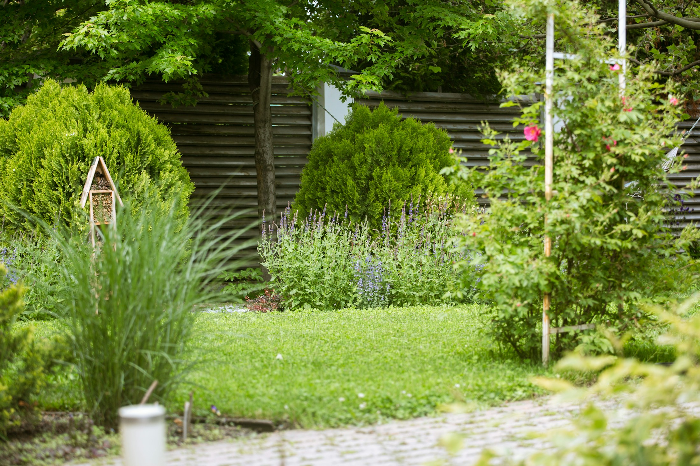
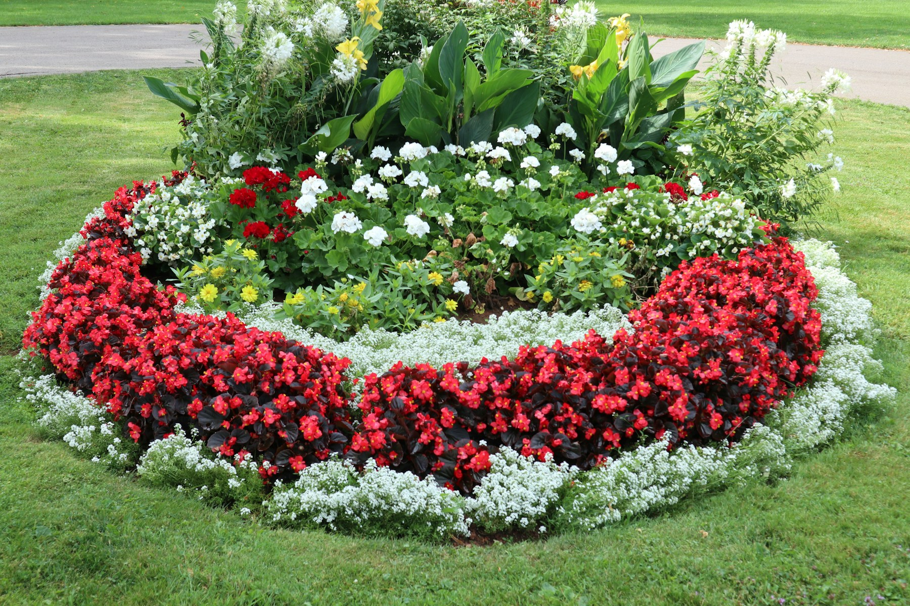

A yard you can
enjoy again.
Clear away leaves, weeds and yard debris. Make room for a fresh season with spring and fall cleanup.
- Seasonal yard cleanup
- Weeding & debris removal

DENVER & AURORA, COLORADO
The cleanup. The trimming. The care.
We take care of the yard, so you can enjoy it.
A FRESH START, OUTSIDE
From an overgrown corner to a full seasonal cleanup, give your outdoor space the attention it needs.
Clear away leaves, weeds and yard debris. Make room for a fresh season with spring and fall cleanup.
Keep the everyday details in shape with lawn and garden maintenance, from open lawns to flower beds.
Bring overgrown shrubs back into shape, or remove unwanted bushes to open up your garden.
Refresh planting beds with mulch, or talk through a new sod lawn and other landscaping needs.
Have a yard that needs a little of everything?
Let’s talk about it
ROOTED RIGHT HERE
Quality Garden Services has been part of the Denver area since 1995.
Led by owner Patrick Walusimbi, we help homeowners with the practical work that keeps a yard looking cared for: clearing, trimming, weeding and maintaining.
Whether your garden needs a seasonal reset or ongoing attention, it starts with a conversation about your space.
LET’S START WITH YOUR YARD
Call Patrick to discuss your yard
and request a free estimate.